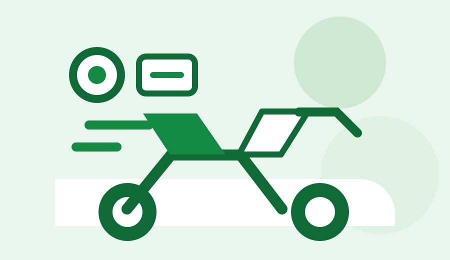

Sparepart Motor Terpercaya
Sparepart motor pilihan untuk perawatan harian.
Temukan komponen penting motor dengan katalog yang bersih, cepat dibaca, dan mudah dicari.
Belanja Sekarang
Kategori
Kategori Sparepart
Produk Pilihan
Sparepart Motor Terpercaya
Temukan komponen penting motor dengan katalog yang bersih, cepat dibaca, dan mudah dicari.
Belanja Sekarang
Kategori
Produk Pilihan